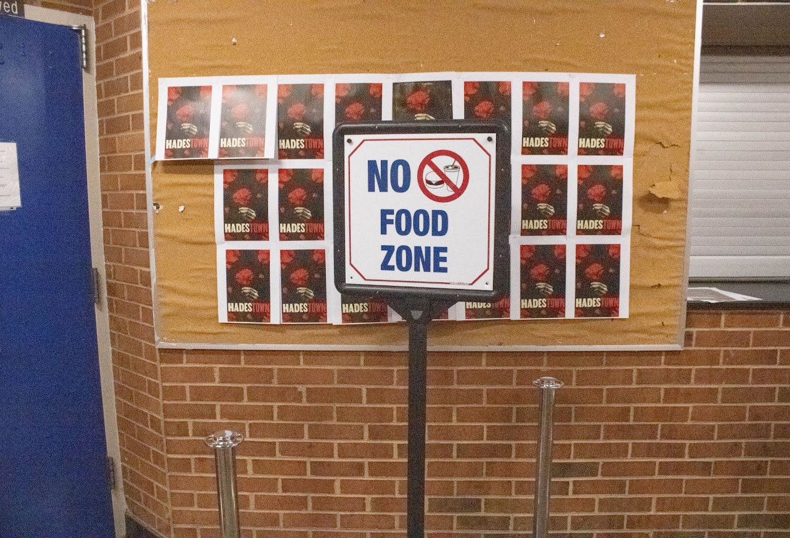
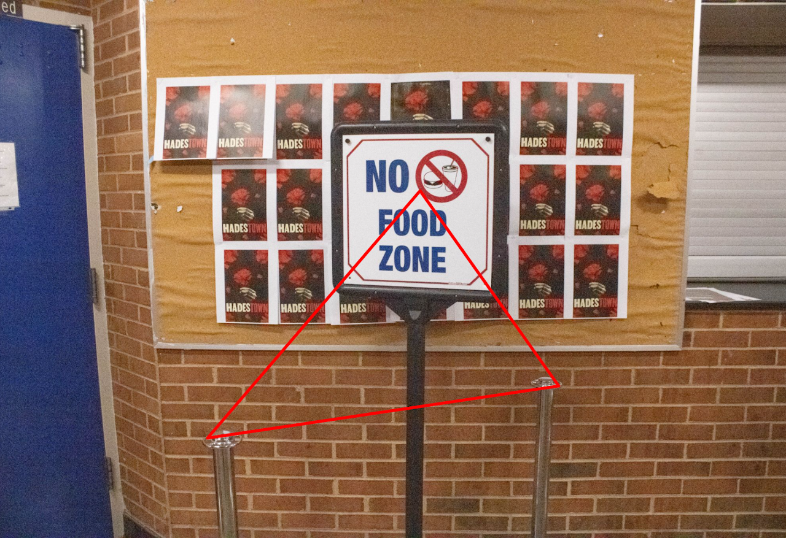
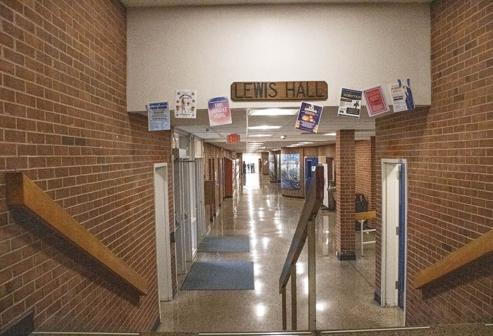
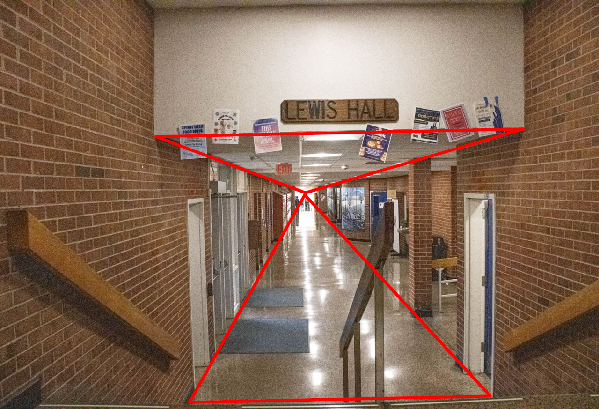
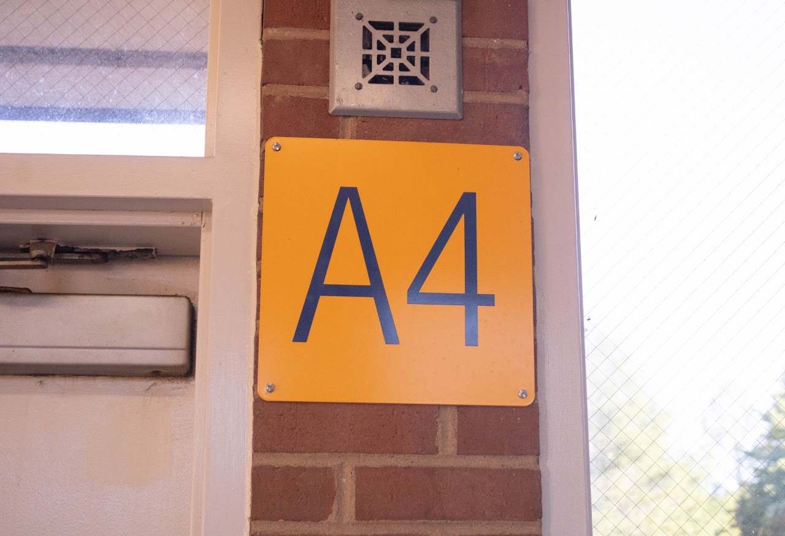
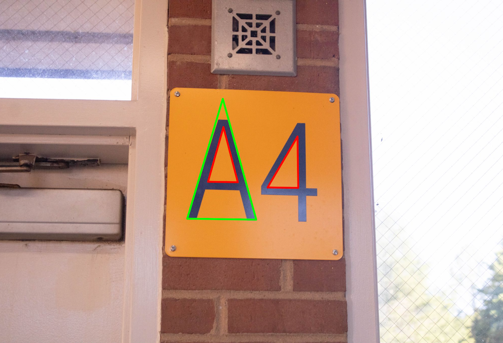

In this one when I looked at it my eyes drifted from the two poles at the bottom to the sign and I thought that it would make a nice implied triangle.


In this one I saw the way the hallway floor and ceiling disappeared and decided to turn that into two implied triangles.


In this one I saw the A and the 4 and saw how they both made physical triangles perfectly and I decided to make them into said triangles.
